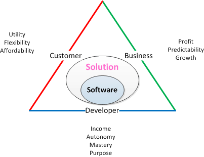
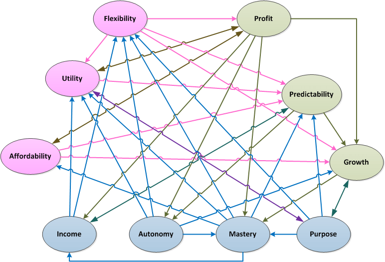
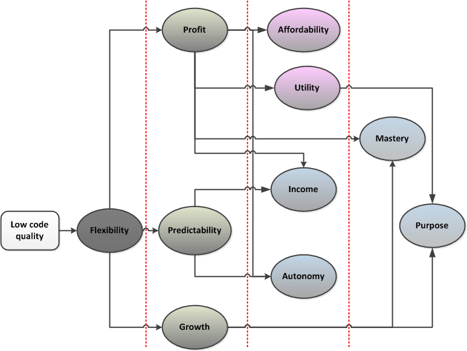
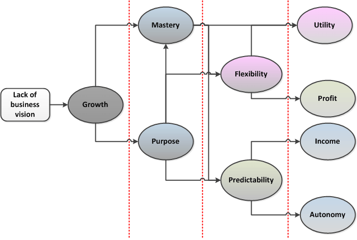
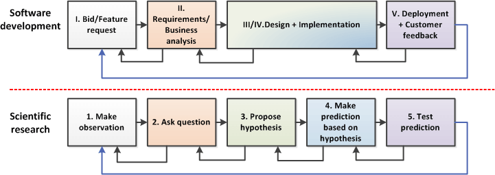
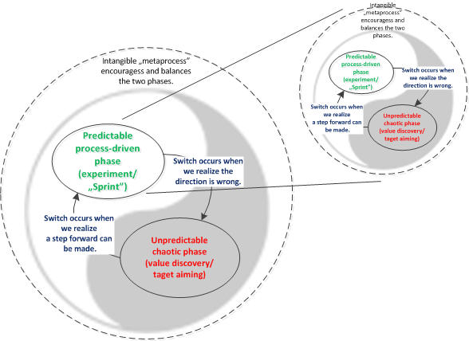

Software Development as a Research in the Domain of Value
Disclaimer
This article is my personal opinion about the nature of software development. This is not intended to be a scientific paper so many statements are intentionally bold and direct to make the text short. I did my best to present the nature of software development based on my own observations and available sources, but I am not a business theoretician, science philosopher nor sociologist, and I may be totally wrong. Additionally, this probably does not apply to all kinds of software (e.g., embedded), but in my opinion, covers at least the business application development process. Moreover, this article is unavoidably written from the developer perspective, though I would like to know other perspectives as well.
“Our real discoveries come from chaos, from
going to the place that looks wrong and stupid and foolish.”
―Chuck Palahniuk
Acknowledgments
I’d like to thank Mr. Gerard Garcia for all the valuable comments he provided.
It All Starts With Needs
According to Wikipedia, “A need is something that is necessary for an organism to live a healthy life. […] in the case of a need, a deficiency causes a clear adverse outcome: a dysfunction or death […], a need is something required for a safe, stable and healthy life […]”. In the case of software development, there are three major symbiotic organisms (also called stakeholders) coexisting together and benefiting from a developed solution, which I define as software and any other supporting artifacts (documents, procedures, policies, …). These organisms are:
- customer – an entity or entities, whose needs drive the development of a solution, and who benefits from deploying it;
- business – an entity or entities, that benefit from providing a solution (owner, shareholders, management, …);
- developer – an entity or entities that benefit from building the solution (programmers, architects, analysts, quality engineers, …).
There can be more organisms, like for example “operations”, but I’ll keep three for simplicity.
Each of these three organisms has its own set of needs which should be satisfied with the solution provided by the company.

For customer, the most important needs the solution must satisfy are:
- Utility – which denotes how well the solution solves a problem the particular customer has. In case of software, a utility can be decomposed into provided functionality, convenience, performance, reliability and so on;
- Flexibility – which denotes how well the solution adapts to the new challenges that customer faces. It can be generally expressed as a readiness and response time to change requests;
- Affordability – which can generally be expressed as a need to achieve a positive return of investment.
For business, the most important needs the solution must satisfy are:
- Profit – measured with financial benefit required to maintain business;
- Predictability – which denotes how stable the internal and external environment of the company is;
- Growth – which prevents stagnation and decay.
For developer, the most important needs the solution must satisfy are:
- Income – for support of the life and well-being of the developer (corresponds to two lowest levels of Maslow’s hierarchy);
- Autonomy – which can be translated to the need of having control over the environment (corresponds to the second level of Maslow’s hierarchy);
- Mastery – which involves the improvement of one’s skills (corresponds to the two highest levels of Maslow’s hierarchy) and performing quality work;
- Purpose – which translates to a need for higher meaning, justification of undertaken efforts, and improvement of the future.
All these needs have to be satisfied to some extent by software solution for this symbiosis to flourish. Failure to satisfy some needs results in failure to satisfy others causing a potential domino effect and an end of symbiosis.
No Need Is an Island
Needs are related in a manner that when one need gets satisfied, the potential ability to satisfy another need is amplified. On the other hand, failure to satisfy one need causes potential failure to satisfy another. An example of a relation would be higher Flexibility enabling an increase in Profit, as more features can be sold to customers.
The following figure presents this concept, where ovals represent needs, lines represent relations and arrows denote the direction of (potential) positive or negative amplification (assuming all other factors constant).

As mentioned before, the amplification may be negative. In this situation, a failure to satisfy one need causes failures to satisfy others. The following example diagram (which is a derivative of Figure 2) shows, how low quality of code fails to satisfy the need for Flexibility. This causes ripple effects on the whole set propagating along relation lines. The negative impact is denoted by the intensity of the grey color (more gray equals more impact), and the process is divided into stages marked by red vertical lines as impact takes time to propagate losing its value along the way.

Low quality is generally attributed to a code that is difficult to understand and modify. This impacts Flexibility, as a company is not able to react quickly to changing customer needs. Flexibility impacts Profit, Predictability and Growth, as the product may lag behind the competition, budgets and schedules get overrun and the ability to adapt to new markets or generate product spin-offs is lowered. Lower Profit impacts Affordability as the company’s ability to compete with the price is reduced. It also impacts Utility as new features, optimizations or other improvements get delayed. It also impacts Income since a tight budget may force the company to reach for the cheaper workforce or cut existing benefits. Lower Profit impacts Autonomy, because when the budget gets tighter, control mechanisms get tighter as well. Finally, it impacts Mastery, when training opportunities diminish and the pace of work gets more important than quality. Lower Predictability impacts Income in a sense that the company tends to cut development costs to increase the financial buffer. It also impacts Autonomy as the natural management reaction is to increase planning, reporting, and accounting accuracy. Lower Growth or stagnation impacts Mastery. When no growth is planned, short term stop-gap solutions are more appreciated. Finally, lower Utility and Growth impact Purpose, since developers lose the feeling that they are building something useful for the future.
The presented example is actually simplified since some relations have been omitted for clarity. In a real situation, the feedback gets propagated along all lines (see Figure 2) until corrective action is taken or the company gets in trouble.
Another simplified example below shows how a lack of business vision impacts the need for Growth, and how this negative impact propagates along relation lines. I’ll leave the proof of this process as an exercise to the reader (using the table from Appendix).

From Needs to Values
In the context of software development, let’s define value as anything that satisfies a need (which is somewhere between ethical definition of value and economic definition of utility). The better something (an artifact, event, process, material object, etc.) satisfies a need, the higher value it represents.
The most common values satisfying the presented needs in context of software can be summarized as follows (the list is not exhaustive, and many values usually satisfy more than one need):
- for Utility – software functionality, operation speed, usability, low failure rate, low defect rate, user training, alignment with business process
- for Flexibility – readiness to accept change requests, speed of development, quality of communication
- for Affordability – affordable license price, stable pricing, flexible pricing
- for Profit – raw monetary value, stability of profit, customer retention rate
- for Predictability – transparent development process, employee retention rate, customer retention rate, stability of cost, readiness to accept change requests, speed of development
- for Growth – customer base growth, product portfolio growth
- for Income – raw monetary value, the regularity of payments, benefits
- for Autonomy – transparent scheduling, work time flexibility, trust
- for Mastery – training, appreciation of quality, freedom of initiatives
- for Purpose – alignment with personal values, appreciation from a customer, appreciation from business
The goal of a successful symbiosis is to produce as much value as possible for all three organisms while keeping the optimal balance among all of the needs.
Software Development as Research Activity
In order to find values that may best satisfy stakeholders’ needs, software development team has to actively search through and evaluate all possible solutions. As needs change over time, there is a constant interactive pursuit of a moving target. Because of this, software development resembles applied scientific research, where exploring the unknown creates something new (otherwise existing software would be reused). Software development process phases can be mapped to phases of scientific research, though vocabulary used by both communities is different.

The stages of software solution development and scientific research resemble each other in the following manners:
- bid or feature request, being the initial observation of customer’s need, is equivalent to interpretation of observation (what we actually see) in scientific research
- requirements/business analysis, being the problem bounding phase, is equivalent to formulation of the right question that properly nails the observed problem
- design + implementation phase is equivalent to hypothesis proposal and making predictions of how to satisfy customer’s needs and with what consequences. It is a rapid iteration of mental construction and mental experiments, that explore the multidimensional space of possible solutions using heuristics. This similarity is clearly visible, when one observes how design and code (being essentially the same at different layers of abstraction) tend to verify and influence each other rapidly until the work is finally considered finished.
- finally, deployment is an experiment that verifies hypothesis and predictions, mostly expressed in a form of software. Technical and functional assumptions get verified, and new change requests get formulated.
Taming Chaos
Research, being by its nature a creative process, is inherently unpredictable and cannot guarantee success (as having good ideas is never guaranteed). Since software development strongly resembles (or to state it boldly, actually is) an applied scientific research, uncertainty is inherent to both the overall process and to every phase of software development.
A bid or feature request is often an open-ended question that can be answered only approximately considering the amount of information possessed at this stage. Ironically, scope and cost are usually fixed at this stage, when a project is just a ”guess”. The duration and effects of this phase cannot be predicted and is strongly affected by number of parties involved, geographic location, communication effectiveness, business strategies, economic state and other.
The requirements/business analysis is iterative by nature, as one loops until some acceptance threshold gets satisfied which is usually just a collective “gut feeling” of participants (sometimes called minimum viable product). Requirements completeness is always an open-ended problem anyway, no matter how much time is spent on analysis. The duration (number of iterations) and effects of this phase is strongly affected by a number of parties involved, geographic location, weather, availability of domain experts, communication effectiveness, tools availability or competence of experts (it happens that customer designates the least competent person as a domain expert).
The duration and outcome of design + implementation depends on quality of requirements, communication, skills, quality of existing code and design, and competence of participating people. This stage requires high dose of creativity, conscientiousness and openness, and is impacted by the same issues as the previous one.
The unpredictability of deployment phase duration and outcome comes mainly from inability to enforce pace of adoption by customer, but communication makes a big impact as well.
The Production Line Fallacy
Many companies make a mistake thinking that the construction of software-based solutions is like mass production of cars. The issue is that production of cars is the process of making many instances of a known thing (body, engine, wheels, etc.) with some variability in terms of features and materials. The problem is generally well understood and scoped, methods well mastered and standards externally enforced. Because of that, many managers make a mistake that applying a well-defined process to software development will eventually lead to success. They think that strict adherence to currently fashionable process (eg. SCRUM), by a hoard of pigeonholed production-line workers will lead to success.
In the light of what was said before, this is a fallacy as no process can substitute peoples’ intelligence, knowledge, experience and dedication. Moreover, an inappropriate process can suppress all these required qualities, resulting in worse results than no process at all. Translated into the realm of research this means that no amount of ordinary Joes, following even the most sophisticated process, can substitute one Einstein, because “One machine can do the work of fifty ordinary men, [but] no machine can do the work of one extraordinary man”, where a software-factory-line can be imagined as a machine itself. On the other hand, if one finds intelligent, knowledgeable, experienced and dedicated people and present them a goal, they will usually come up with a reasonable minimal process (which doesn’t mean “lightweight”, but rather “appropriately tailored”), that will lead them there without much supervision. Yet in reality most project administrators seem to prefer to be completely in control of mediocre processes to being "out of control" with super-productive processes.
Best Effort Everywhere
Software development similarly to applied scientific research is a best-effort process with unpredictable time frame and results. There are risk mitigation techniques that can be used (off-the-shelf components, design patterns, best practices, quality enforcement, project review procedures, short iterations, insurance, overbidding, etc.), but inherent uncertainty cannot be eliminated. This suggests that management strategies applied to both scientific research and software development should be similar and based on employing, the right people, providing appropriate means and managing risk.
The “metaprocess”
The article may seem to suggest that we should abandon all hope of successful and predictable software development, but this is not true. The success can be achieved by acknowledging and embracing the coexistence of chaotic and predictable parts interleaved within a recursive “metaprocess” just as Yin-Yang combines order and chaos together.

The intangible “metaprocess” is driven by intelligence, knowledge, experience and dedication of people involved. On one hand it is disturbing as no strict control can be imposed on it. On the other hand it is liberating as both peoples’ creativity and orderliness can intermittently take part in it. The positive side is that intelligence, knowledge, experience and dedication are factors which tremendously mitigate the inherent unpredictability and chaos. On one hand, people can better aim at their targets by avoiding doing useless or harmful things (which they are able to recognize better and faster). On the other hand they tend to rigorously pay attention to quality of work while conducting experiments/designing, writing and testing code (since they understand the value of quality artifacts being produced in correct order).
P.S. Beware of False Values
Approaching software development from value perspective may have some dangerous consequences if not done carefully, because there are some values that turn out to be false and eventually deadly when adopted by enterprise.
One of such values, often stated explicitly in corporate code of conduct, is courtesy, understood as the showing of politeness in one's attitude and behavior toward others. Courtesy is important value in social terms as it fosters stability of society by preventing uncontrolled explosions of aggression. The problem is that enterprises and societies operate in different realities. For a society, it is more important to be stable than efficient, because (at least in the contemporary world) societies do not reside in a Darwinian world of natural selection. Companies on the other hand, live in a competitive world of aggressive natural selection called “free market”. In such a world, it is far more important to be efficient than polite. A healthy company shall always praise constructive argument over polite consensus, as the first leads to creative solutions and the last to skilled incompetence.
Appendix
The following table explains the relations between needs as defined in the second chapter.
| Need-to-need relation | Amplification of Success | Amplification of Failure |
| Affordability → Growth | Low or flexible prices foster market share growth | High or inflexible prices hamper market share growth. |
| Affordability → Predictability | Low or flexible prices make solution immune to market turbulence | High or inflexible prices make solution vulnerable to market turbulence |
| Autonomy → Flexibility | High developer autonomy fosters a creative approach to change | Low developer autonomy hampers creative approach to change |
| Autonomy → Growth | High developer autonomy fosters creative approach to product(s) | Low developer autonomy hampers creative approach to product(s) |
| Autonomy → Mastery | High developer autonomy motivates skill improvement | Low developer autonomy hinders skill improvement |
| Autonomy → Utility | High developer autonomy fosters a creative approach to customer problems | Low developer autonomy hampers creative approach to customer problems |
| Flexibility → Growth | The ability to change opens opportunities to grow. | Inability to change wastes opportunities to grow. |
| Flexibility → Predictability | Ability to change makes effort more predictable | Inability to change makes effort less predictable |
| Flexibility → Profit | Ability to change encourages customers to pay for change | Inability to change discourages customers to pay for change |
| Flexibility → Utility | Ability to change allows keeping alignment with customer needs | Inability to change prevents keeping alignment with customer needs |
| Growth → Mastery | Expansion motivates developers for self-improvement | Stagnation demotivates developers for self-improvement |
| Growth → Purpose | The expansion gives developers the feeling of building future | Stagnation deprives developers of the feeling of building future |
| Income → Flexibility | High salary motivates developers for taking initiative and long term thinking | Low salary demotivates developers for any actions beyond the minimum |
| Income → Predictability | High salary motivates developers for taking initiative and long term thinking | Low salary demotivates developers for any actions beyond the minimum |
| Income → Utility | High salary fosters active approach to customer problems | Low salary hinders active approach to customer problems |
| Mastery → Affordability | High skills reduce the time of development | Low skills prolong the time of development |
| Mastery → Flexibility | High skills foster technically flexible solutions | Low skills hamper technically flexible solutions |
| Mastery → Predictability | High skills make development easier | Low skills make development difficult |
| Mastery → Utility | High skills allow meeting customer needs | Low skills allow only what is currently doable. |
| Predictability → Autonomy | Stable companies are more willing to trust developers | Unstable companies are more willing to control developers |
| Predictability → Growth | Stable companies can plan long term growth | Unstable companies tend to secure existing market positions |
| Predictability → Income | Stable companies can afford higher salaries and benefits | Unstable companies save on salaries and benefits |
| Profit → Affordability | Rich companies can compete with the price | Poor companies cannot compete with price |
| Profit → Autonomy | Rich companies are more willing to trust developers | Poor companies are more willing to control developers |
| Profit → Growth | Rich companies can plan long term growth | Poor companies struggle to secure existing market positions |
| Profit → Income | Rich companies can afford higher salaries and benefits | Poor companies save on salaries and benefits |
| Profit → Mastery | Rich companies can afford training and invest in quality | Poor companies save on training and quality |
| Profit → Utility | Rich companies have means to develop costly features | Poor companies do not have means to develop costly features |
| Purpose → Flexibility | Appreciation fosters a creative approach to change | Lack of appreciation hampers creative approach to change |
| Purpose → Growth | Appreciation fosters a creative approach to product(s) | Lack of appreciation hampers creative approach to product(s) |
| Purpose → Mastery | Appreciation motivates developers for self-improvement | Lack of appreciation demotivates developers for self-improvement |
| Purpose → Predictability | Appreciation motivates adherence to schedules | Lack of appreciation demotivates adherence to schedules |
| Utility → Predictability | A solution that meets customer needs has strong market position | A solution that fails to meet customer needs has a weak market position |
| Utility → Profit | A solution that meets customer needs can be sold for more | A solution that fails to meet customer needs to be cheap to justify a purchase |
| Utility → Purpose | A solution that meets customer needs gives developers the feeling of being useful | Solution that fails to meet customer needs deprives developers of the feeling of being useful |